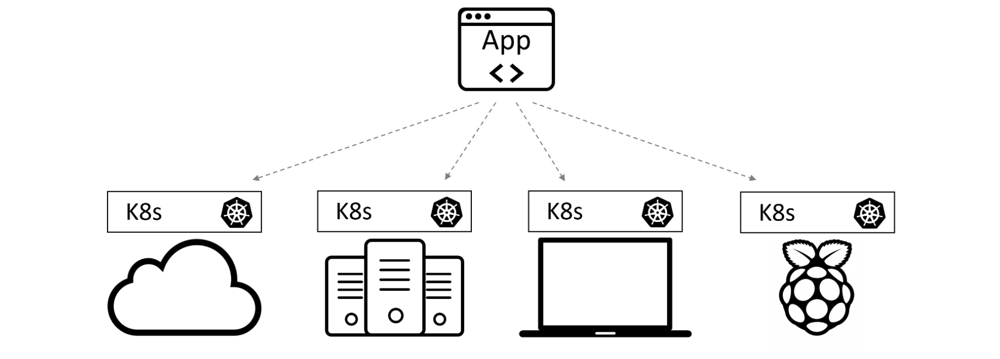
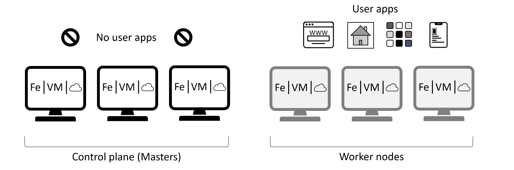
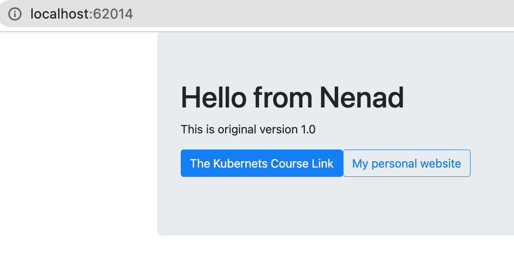
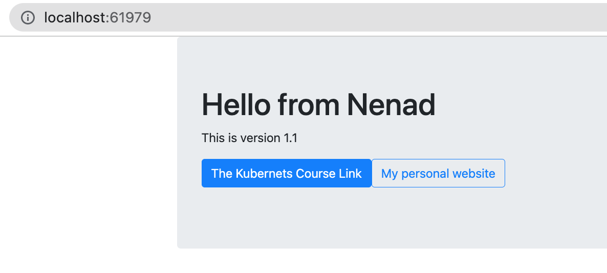
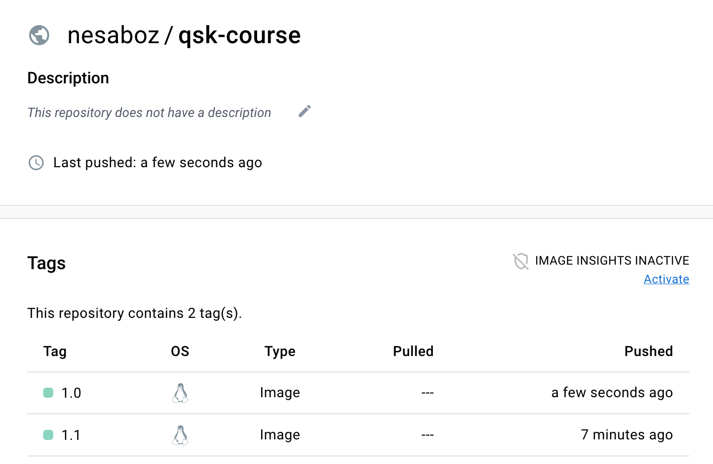
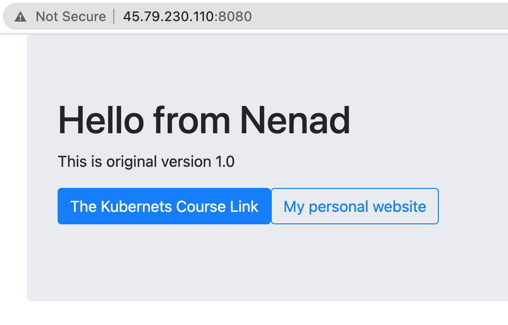
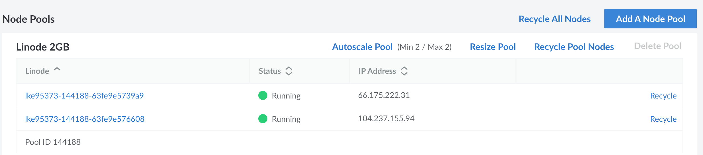
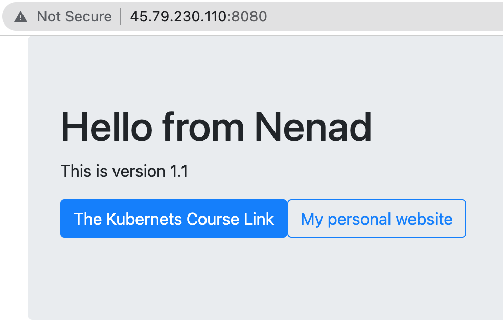

cd /Users/nenad.bozinovic/Work/blog/nbs/mini-projects/10_kubernetes/usercode/Users/nenad.bozinovic/Work/blog/nbs/mini-projects/10_kubernets/usercodeMarch 3, 2023
Credits Educative.io
The goal is to host cloud-native application that must:
Kubernets allows all of this. It is an orchestrator that bring together a set of microservices and organizes them into an application that brings value.
Kubernets emerged in 2014 (from Google) as a way to abstract underlying cloud and server infrastructure. It commoditized infrastructure making and becoming “OS of the cloud”.
kubelet and Container runtime.kubelet is the main Kubernetes agent. It joins the Node to the cluster and communicates with the control plane, in charge of notifying when tasks are received and reporting on the status of those tasks.

First we want our App to be containerized. It has a few files:
/Users/nenad.bozinovic/Work/blog/nbs/mini-projects/10_kubernets/usercodeDockerfile: This file is not part of the application. It contains a list of instructions that Docker executes to create the container image (i.e. containerize the application).app.js: This is the main application file. It is a Node.js application.bootstrap.css: This is a stylesheet template, which determines how the application’s web page will look.package.json: This lists the application dependencies.views: This is a folder that contains the HTML used to populate the application’s web page.Docker file contains following:
FROM node:current-slim
COPY . /src
RUN cd /src; npm install
EXPOSE 8080
CMD cd /src && node ./app.jsWe’ll now build two docker images called qsk-course version 1.0 and 1.1 under my local account (nesaboz):
Modify the App to create a new version and build version 1.1:
We can see the nesaboz/qsk-course image now in the list of docker images:
REPOSITORY TAG IMAGE ID CREATED SIZE
nesaboz/qsk-course 1.0 8d9065c8c75f 2 hours ago 268MB
nesaboz/qsk-course 1.1 60932818191e 5 hours ago 268MB
nesaboz/docker101tutorial latest 940714c42b63 2 days ago 47MB
alpine/git latest 22d84a66cda4 3 months ago 43.6MBWe can now actually run the application locally by running:
Docker will assign some port (can be seen in Docker Desktop), and our app will be running locally in a browser:

We can also run version 1.1:

Running locally is fine but we want to run in a cloud. There are many hosting services for containers, DockerHub is the easiest to use. We can push container to DockerHub by running the following (in Terminal since it requires password):
And we can see now that we have two verions on the DockerHub:

LKE (https://cloud.linode.com/) is a paid service to host Kubernets by setting a cluster of machines (we’ll use shared, CPU-only VMs). Once we set up a cluster, we can download a config file (aka kubeconfig file) that looks like this:
apiVersion: v1
kind: Config
preferences: {}
clusters:
- cluster:
certificate-authority-data: LS0tLS1CR...
server: https://8c292154-27de-4e91-a129-fcb2a1614fee.us-west-1.linodelke.net:443
name: lke95373
users:
- name: lke95373-admin
user:
as-user-extra: {}
token: eyJhbGc...
contexts:
- context:
cluster: lke95373
namespace: default
user: lke95373-admin
name: lke95373-ctx
current-context: lke95373-ctxWe can now activate nodes:
export KUBECONFIG=/usercode/config <== path might be different, for example KUBECONFIG=config
kubectl get nodesNAME STATUS ROLES AGE VERSION
lke95373-144188-63fe9e5739a9 Ready <none> 22h v1.25.4
lke95373-144188-63fe9e576608 Ready <none> 22h v1.25.4The nodes are now running.
kubectlMain command that executes everything kubernets is kubectl:
clientVersion:
buildDate: "2022-11-09T13:36:36Z"
compiler: gc
gitCommit: 872a965c6c6526caa949f0c6ac028ef7aff3fb78
gitTreeState: clean
gitVersion: v1.25.4
goVersion: go1.19.3
major: "1"
minor: "25"
platform: darwin/amd64
kustomizeVersion: v4.5.7
serverVersion:
buildDate: "2023-01-18T19:15:26Z"
compiler: gc
gitCommit: ff2c119726cc1f8926fb0585c74b25921e866a28
gitTreeState: clean
gitVersion: v1.25.6
goVersion: go1.19.5
major: "1"
minor: "25"
platform: linux/amd64Pod is a lightweight wrapper for Docker image we already deployed on DockerHub. The config file for Pod is pod.yml:
apiVersion: v1
kind: Pod
metadata:
name: first-pod
labels:
project: qsk-course
spec:
containers:
- name: web-ctr
image: nesaboz/qsk-course:1.0
ports:
- containerPort: 8080NAME READY STATUS RESTARTS AGE
first-pod 1/1 Running 0 3m36sWe can run similar though more detailed command (doesn’t run here in notebook):
To delete pods:
Service controller provides connectivity to the application running in the Pod i.e. provisions an internet-facing load balancer. To do that we use svc-cloud.yml file that contains following:
apiVersion: v1
kind: Service
metadata:
name: cloud-lb
spec:
type: LoadBalancer
ports:
- port: 8080
targetPort: 8080
selector:
project: qsk-course <- this name must match pod.metadata.labels.project aboveNote that spec.selector.project must match the pod.metadata.labels.project
(We also have an option of running svc-local.yml skipping that for now)
qsk-cloud LoadBalancer 10.128.141.64 45.79.230.110 8080:32026/TCP 13sor for more details run:
now go to the 45.79.230.110:8080 address in your browser:

To delete svc object:
Deployment service provides self-healing, enable scaling, and rolling updates. The file deploy.yml looks like this:
kind: Deployment <<== Type of object being defined
apiVersion: apps/v1 <<== Version of object specification
metadata:
name: qsk-deploy
spec:
replicas: 5 <<== How many Pod replicas
selector:
matchLabels: <<== Tells the Deployment controller
project: qsk-course <<== which Pods to manage, must match svc.spec.selector.project above
template:
metadata:
labels:
project: qsk-course <<== Pod label, must match svc.spec.selector.project above
spec:
containers:
- name: qsk-pod
imagePullPolicy: Always <<== Never use local images
ports:
- containerPort: 8080 <<== Network port
image: nesaboz/qsk-course:1.0 <<== Image containing the appNote that spec.template.labels.project must match the svc.spec.selector.project
NAME READY UP-TO-DATE AVAILABLE AGE
qsk-deploy 3/5 5 3 3sNAME READY STATUS RESTARTS AGE
qsk-deploy-767d99b5c7-5v9vs 1/1 Running 0 52s
qsk-deploy-767d99b5c7-9h67b 1/1 Running 0 52s
qsk-deploy-767d99b5c7-dpsk9 1/1 Running 0 52s
qsk-deploy-767d99b5c7-lwxcf 1/1 Running 0 52s
qsk-deploy-767d99b5c7-wh2rh 1/1 Running 0 52sIf we delete one pod, for example first one qsk-deploy-767d99b5c7-5v9vs:
NAME READY STATUS RESTARTS AGE
qsk-deploy-767d99b5c7-4vdjs 1/1 Running 0 13s
qsk-deploy-767d99b5c7-5v9vs 1/1 Terminating 0 3m19s
qsk-deploy-767d99b5c7-9h67b 1/1 Running 0 3m19s
qsk-deploy-767d99b5c7-dpsk9 1/1 Running 0 3m19s
qsk-deploy-767d99b5c7-lwxcf 1/1 Running 0 3m19s
qsk-deploy-767d99b5c7-wh2rh 1/1 Running 0 3m19swe see that new one gets running immediately, demonstrating self-healing.
We can also see that pods are running on both nodes (lke...a9 and lke...08):
NAME READY STATUS RESTARTS AGE IP NODE NOMINATED NODE READINESS GATES
qsk-deploy-767d99b5c7-4vdjs 1/1 Running 0 2m50s 10.2.1.7 lke95373-144188-63fe9e5739a9 <none> <none>
qsk-deploy-767d99b5c7-9h67b 1/1 Running 0 5m56s 10.2.0.7 lke95373-144188-63fe9e576608 <none> <none>
qsk-deploy-767d99b5c7-dpsk9 1/1 Running 0 5m56s 10.2.1.6 lke95373-144188-63fe9e5739a9 <none> <none>
qsk-deploy-767d99b5c7-lwxcf 1/1 Running 0 5m56s 10.2.1.4 lke95373-144188-63fe9e5739a9 <none> <none>
qsk-deploy-767d99b5c7-wh2rh 1/1 Running 0 5m56s 10.2.0.6 lke95373-144188-63fe9e576608 <none> <none>
If we delete a node (in a LKE Cloud Console) then we can see that new pods will be created on a available node:
NAME STATUS ROLES AGE VERSION
lke95373-144188-63fe9e576608 Ready <none> 23h v1.25.4NAME READY STATUS RESTARTS AGE IP NODE NOMINATED NODE READINESS GATES
qsk-deploy-767d99b5c7-2qmgn 1/1 Running 0 105s 10.2.0.8 lke95373-144188-63fe9e576608 <none> <none>
qsk-deploy-767d99b5c7-9h67b 1/1 Running 0 13m 10.2.0.7 lke95373-144188-63fe9e576608 <none> <none>
qsk-deploy-767d99b5c7-f6k76 1/1 Running 0 104s 10.2.0.10 lke95373-144188-63fe9e576608 <none> <none>
qsk-deploy-767d99b5c7-vsvgv 1/1 Running 0 104s 10.2.0.9 lke95373-144188-63fe9e576608 <none> <none>
qsk-deploy-767d99b5c7-wh2rh 1/1 Running 0 13m 10.2.0.6 lke95373-144188-63fe9e576608 <none> <none>We can see that old pods (qsk-deploy...9h67b and qsk-deploy...wh2rh) are still running, the other 3 are new (created 105 seconds ago). If we had set the Autoscale Pool on LKE, then the node will recover eventually:

but the pods will still run only on one (lke...08) node:
NAME READY STATUS RESTARTS AGE IP NODE NOMINATED NODE READINESS GATES
qsk-deploy-767d99b5c7-2qmgn 1/1 Running 0 20m 10.2.0.8 lke95373-144188-63fe9e576608 <none> <none>
qsk-deploy-767d99b5c7-9h67b 1/1 Running 0 32m 10.2.0.7 lke95373-144188-63fe9e576608 <none> <none>
qsk-deploy-767d99b5c7-f6k76 1/1 Running 0 20m 10.2.0.10 lke95373-144188-63fe9e576608 <none> <none>
qsk-deploy-767d99b5c7-vsvgv 1/1 Running 0 20m 10.2.0.9 lke95373-144188-63fe9e576608 <none> <none>
qsk-deploy-767d99b5c7-wh2rh 1/1 Running 0 32m 10.2.0.6 lke95373-144188-63fe9e576608 <none> <none>If we change a number of replicas in the deployment file, newly pods will intelligently run on a newly recovered node so the distribution is maintained:
NAME READY STATUS RESTARTS AGE IP NODE NOMINATED NODE READINESS GATES
qsk-deploy-679dc78b78-bgmfm 1/1 Running 0 14m 10.2.0.3 lke95373-144188-63fe9e5739a9 <none> <none>
qsk-deploy-679dc78b78-ckvqx 1/1 Running 0 14m 10.2.0.5 lke95373-144188-63fe9e5739a9 <none> <none>
qsk-deploy-679dc78b78-cvh5t 1/1 Running 0 2m6s 10.2.1.2 lke95373-144188-63fe9e576608 <none> <none>
qsk-deploy-679dc78b78-gll5p 1/1 Running 0 2m6s 10.2.1.6 lke95373-144188-63fe9e576608 <none> <none>
qsk-deploy-679dc78b78-hjsqx 1/1 Running 0 14m 10.2.0.6 lke95373-144188-63fe9e5739a9 <none> <none>
qsk-deploy-679dc78b78-qs4gs 1/1 Running 0 14m 10.2.0.10 lke95373-144188-63fe9e5739a9 <none> <none>
qsk-deploy-679dc78b78-r4kgl 1/1 Running 0 2m6s 10.2.1.5 lke95373-144188-63fe9e576608 <none> <none>
qsk-deploy-679dc78b78-rqpgh 1/1 Running 0 2m6s 10.2.1.4 lke95373-144188-63fe9e576608 <none> <none>
qsk-deploy-679dc78b78-vblz4 1/1 Running 0 14m 10.2.0.4 lke95373-144188-63fe9e5739a9 <none> <none>
qsk-deploy-679dc78b78-x6f2g 1/1 Running 0 2m6s 10.2.1.3 lke95373-144188-63fe9e576608 <none> <none>Note: kubectl scale should not be used since there is a discrpancy between deploy.yml and new nubmer of replicas. The common practice is to always edit deploy.yml file and re-apply.
We can apply rolling update if we add following lines to deploy.yml:
minReadySeconds: 20 <== to wait for 20 seconds after updating each replica
strategy:
type: RollingUpdate
rollingUpdate:
maxSurge: 1 <== allows Kubernetes to add one extra Pod during an update operation
maxUnavailable: 0 <== prevents Kubernetes from reducing the number of Pods during an updateas well as update the version of the image:
image: nesaboz/qsk-course:1.1 <== this version must exists as an container on DockerHubso the deploy.yml looks like this:
apiVersion: apps/v1
kind: Deployment
metadata:
name: qsk-deploy
spec:
replicas: 5
selector:
matchLabels:
project: diy
minReadySeconds: 20
strategy:
type: RollingUpdate
rollingUpdate:
maxSurge: 1
maxUnavailable: 0
template:
metadata:
labels:
project: diy
spec:
containers:
- name: qsk-pod
imagePullPolicy: Always
ports:
- containerPort: 8080
image: nesaboz/qsk-course:1.1 Now if we re-apply deployment:
deployment.apps/qsk-deploy configuredwe can monitor the rollout status:
Waiting for deployment "qsk-deploy" rollout to finish: 1 out of 5 new replicas have been updated...
Waiting for deployment "qsk-deploy" rollout to finish: 1 out of 5 new replicas have been updated...
Waiting for deployment "qsk-deploy" rollout to finish: 1 out of 5 new replicas have been updated...
Waiting for deployment "qsk-deploy" rollout to finish: 1 out of 5 new replicas have been updated...
Waiting for deployment "qsk-deploy" rollout to finish: 2 out of 5 new replicas have been updated...
Waiting for deployment "qsk-deploy" rollout to finish: 2 out of 5 new replicas have been updated...
Waiting for deployment "qsk-deploy" rollout to finish: 2 out of 5 new replicas have been updated...
Waiting for deployment "qsk-deploy" rollout to finish: 3 out of 5 new replicas have been updated...
Waiting for deployment "qsk-deploy" rollout to finish: 3 out of 5 new replicas have been updated...
Waiting for deployment "qsk-deploy" rollout to finish: 3 out of 5 new replicas have been updated...
Waiting for deployment "qsk-deploy" rollout to finish: 3 out of 5 new replicas have been updated...
Waiting for deployment "qsk-deploy" rollout to finish: 4 out of 5 new replicas have been updated...
Waiting for deployment "qsk-deploy" rollout to finish: 4 out of 5 new replicas have been updated...
Waiting for deployment "qsk-deploy" rollout to finish: 4 out of 5 new replicas have been updated...
Waiting for deployment "qsk-deploy" rollout to finish: 4 out of 5 new replicas have been updated...
Waiting for deployment "qsk-deploy" rollout to finish: 1 old replicas are pending termination...
Waiting for deployment "qsk-deploy" rollout to finish: 1 old replicas are pending termination...
Waiting for deployment "qsk-deploy" rollout to finish: 1 old replicas are pending termination...
deployment "qsk-deploy" successfully rolled outSoon, the App will be updated:

For local application let’s use local scv-local.yml file:
apiVersion: v1
kind: Service
metadata:
name: svc-local
spec:
type: NodePort <== this was LoadBalancer for cloud servers, now is NodePort
ports:
- port: 8080
protocol: TCP <== this is a new line
targetPort: 8080
nodePort: 31111 <== this is a new line
selector:
project: qsk-course <== this must match with the pod project